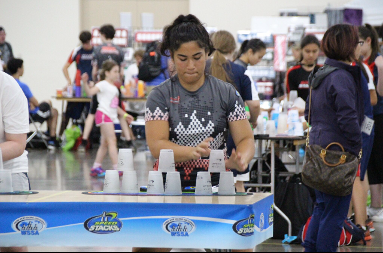
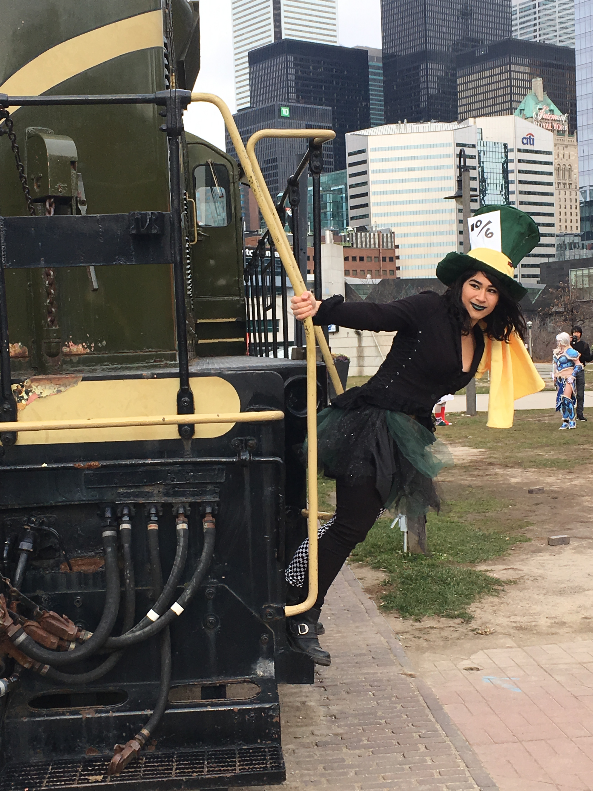

All About Me~! |
||
|---|---|---|
Who Am I? |
||
In a society that does its very best to convince us that we, teenagers, as the future of this world, have the capabilities to do absolutely anything we dream of and that we can become anyone we could possibly want to be, I have spent my entire life doing just that. Most children my age refrain from seizing their opportunities and prevent themselves from achieving their dreams because they don't think they could ever reach their goals, but I, Christina Tissington did not give up and I will continue to strive to be only the very best at what I love. All my hard work and perseverance pays off, and I get the pay off from the experiences I am blessed with and the happiness that comes with it. Of all the wonderful things that life has to offer I have chosen to pursue an extraordinary path of competitive sport stacking and cosplaying. |
||
What I Do! |
||
Sport Stacking |
||
At the age of only ten years old I had begun to pursue my dream of competing on the Canadian sport stacking team at the Junior Olympics. Once I had learnt how to cup stack, I knew that it was something that was going to stick with me for a long long time. The competitive sport that is cup stacking draws many parallels to track and field. You can compete individually (3-3-3, 3-6-3, and the cycle) and as a team (relay and doubles) by stacking plastic cups up and down in a specific sequence as fast as you can. This sport is rapidly growing in North America as teams like mine, Team Canada, is growing and spreading the sport to different corners of the continent. To hear the story of my sport stacking journey, click here. |
 | |
Cosplay |
||
|  | Many people have heard of fan conventions such as Comic Con. A small amount of those people have actually been to those kind of conventions. I, on the other hand, go to fan conventions whenever I can. I absolutely love the gathering of nerds (my people), and revel in the way everyone gets excited over things like seeing their favourite actor/voice actor, or getting certain merch and fan art. Not only is the experience amazing because I get to meet so many neat stars myself and get to spend time with my friends, but I also get to show off my amazing cosplays. To find out more about what cosplay is and how I cosplay, click here. |
|